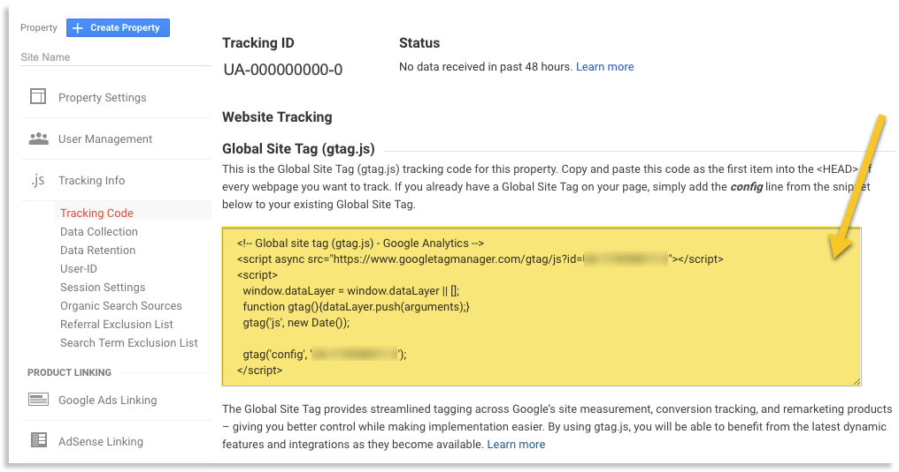
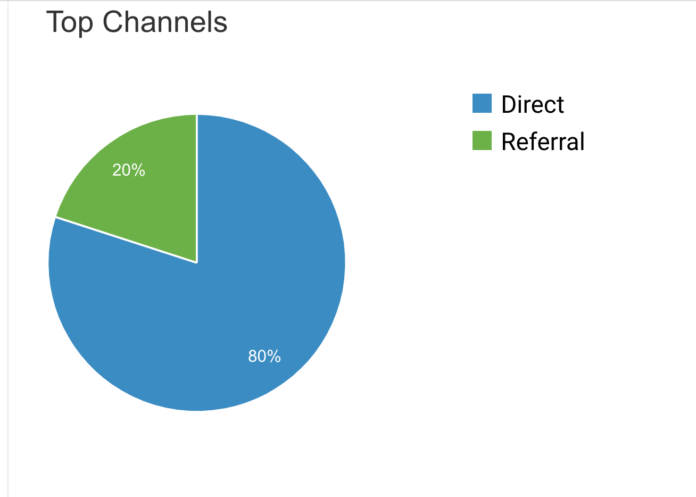
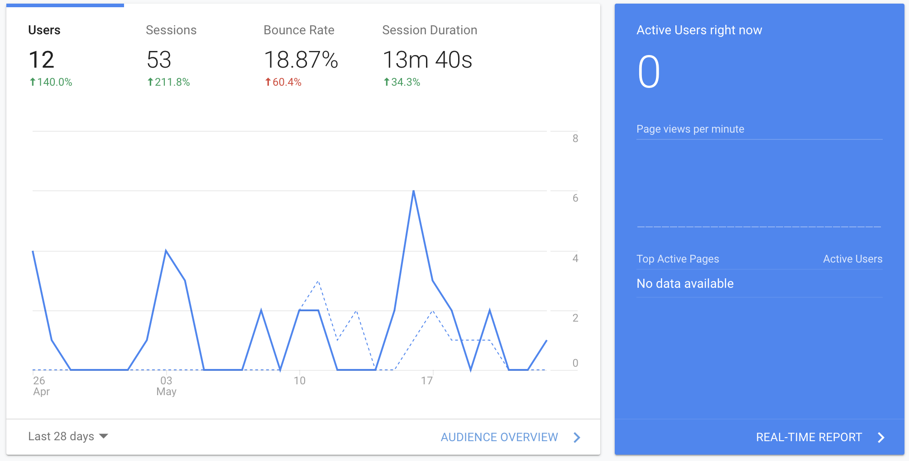
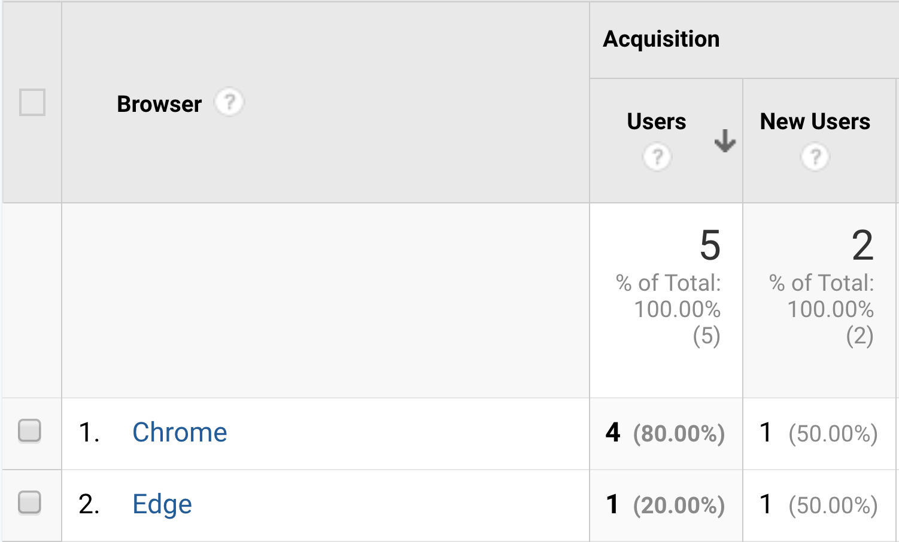
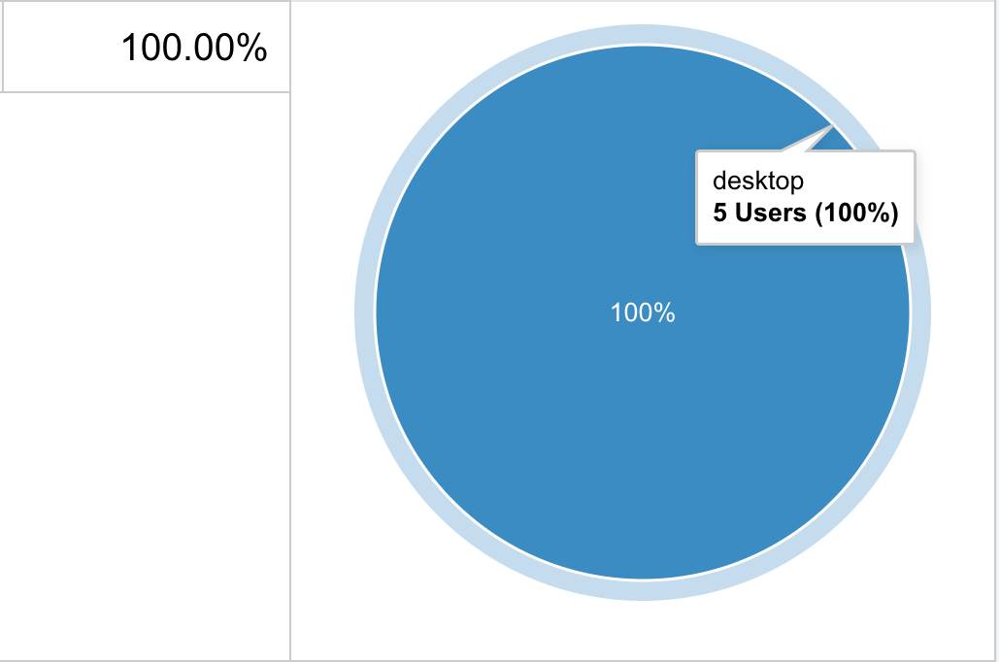

In this week's journal entry I’m going to discuss the process of adding Google analytics to this site. I made a list of assumptions about the users of my “user science journal” and will take a deeper look at either confirming or debunking those assumptions using the tools made available by Google Analytics in the sections below.
Setting up Google Analytics
The process for setting up Google Analytics is fairly straightforward although the steps differ depending on the format of the website. This website is static and written in html/css so the process for adding the Google Analytics code block to the head of each page is different from adding it to a Wordpress site.
Adding it to this site was simple – after creating a new account using the Google Analytics app I was provided with a script tag to place in the head of my document and 24 - 48 hours later I started receiving user data on my Google Analytics dashboard.
Analytics
Guesses about site before inspecting analytics
- My users are “acquired” from direct links that I post in Canvas (educational content management system)
- My site is mostly visited on weekends
- The most popular browser people use to view my site is Google Chrome
- The most popular screen size to view my page is a desktop
Findings
Where did most of my users come from?
- Although the method for which users arrived on my site wasn’t exactly what I had assumed, my guess that most of the traffic on my website was from seattleu.instructure.com (the Canvas site of the school I attend) was correct. The data says that 80% of my traffic is from direct sources – meaning directly input into the browser or clicked on from the user’s bookmarks (most likely me – when I go to copy edit my weekly posts). The remaining 20% was from referrals, which were links to my page that posted on seattleu.instructure.com for my instructor. 
What is the most popular time frame for visiting my site?
- As I suspected most of the traffic on my site seems to be on the weekends while I’m working on my weekly posts. 
What is the most popular browser that people used to view my site?
- Chrome did turn out to be the most used browser for visiting this site, although it was a simple assumption, since it’s the most widely used browser. However, I was surprised to see one Edge user. If I were maintaining a for-profit site, this would probably be an indication that I needed to incorporate Edge specific code (if needed) , but at the very least be aware that although the bulk of users are browsing with chrome, that may not always be the case. 
What is the most popular screen size people use to view my site
- As it turns out the desktop isn’t the most popular, it’s the only screen size/device that people are using to view my site. This makes sense because all of the users visiting my site are doing so for educational purposes, which is rarely done from a mobile device. 
Conclusion
This was an exciting start to looking at user statistics with Google Analytics. It’s unbelievable how many features and report tools that you have access to with this web app – I look forward to trying to get more users on my site so I can have a larger set of data to study.